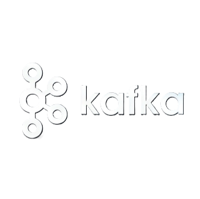

Apache Kafka is a distributed event streaming platform — originally built to solve one company's data-plumbing nightmare, it's now the backbone moving real-time data at LinkedIn, Netflix, Uber, and thousands of other companies. This page covers where it came from, how its core "log" abstraction actually works, where it's used today, and where to learn it properly.

By 2010, LinkedIn had a problem most fast-growing tech companies eventually hit: too many systems, all needing the same data, with no good way to share it.
Around 2010, LinkedIn's data was exploding — member activity, search queries, ad impressions — but the company had no clean way to move that data between its growing collection of internal systems in real time. Existing options were a poor fit: traditional batch pipelines exposed too many implementation details downstream, and traditional message queues like ActiveMQ or RabbitMQ offered strong delivery guarantees the use case didn't need, at a cost the use case couldn't afford. Jay Kreps, who led LinkedIn's Hadoop and real-time infrastructure team, began sketching out a solution — reportedly hammering out much of the earliest code over a Christmas break.
Kreps was joined by engineers Neha Narkhede and Jun Rao, and together the trio spent roughly a year building the first working version. Rather than treating data as something a queue temporarily holds, Kafka was built around a much older, simpler idea: the append-only log — the same basic structure databases use internally for write-ahead logging, repurposed as the core abstraction of an entire messaging system. Kreps named the project after author Franz Kafka, explaining simply that it was "a system optimized for writing," and that he liked Kafka's work.
LinkedIn open-sourced Kafka in early 2011, donating it to the Apache Software Foundation, where it graduated from incubator status to a full Apache top-level project on October 23, 2012. By 2011, Kafka was already ingesting more than a billion events a day inside LinkedIn; within a decade, that number would grow to over a trillion messages daily. In November 2014, Kreps, Narkhede, and Rao left LinkedIn to found Confluent, a company built to commercialize and support Kafka at enterprise scale — while continuing to contribute heavily to the open-source project itself.
Kafka isn't really a message queue in the traditional sense — it's closer to a durable, replayable record of everything that has ever happened, organized into topics.
Producers write events into a topic, split across multiple partitions for parallelism. Each consumer in a group reads from its own partition independently, tracking its position via an offset — meaning the same data can be replayed or re-read later, unlike a traditional queue where a message disappears once consumed.
A named category or feed that events are published to and read from — Kafka's equivalent of a table or channel.
A topic is split into ordered, append-only partitions, allowing Kafka to parallelize both writing and reading at scale.
A sequential ID marking each message's position within a partition, letting consumers track exactly where they've read up to.
A single Kafka server; a Kafka cluster is made up of many brokers working together for scale and fault tolerance.
A set of consumers sharing the work of reading a topic, each handling a subset of its partitions.
Messages persist for a configurable period (or forever, with log compaction) regardless of whether they've been read.
Kafka shows up wherever many independent systems need access to the same real-time stream of events without being tightly coupled to each other.
Kafka's original use case at LinkedIn — capturing pageviews, clicks, and searches and routing them to multiple downstream consumers at once.
Companies like Netflix ingest hundreds of billions of events daily through Kafka to power live dashboards and anomaly detection.
Kafka decouples services from each other — a service publishes an event once, and any number of other services can react independently.
Centralizes logs from many distributed servers into a single, ordered stream for processing or storage.
Paired with Kafka Streams, Apache Flink, or Spark to transform, aggregate, and enrich data continuously as it flows.
Using Kafka's durable log as the source of truth for an application's state, replaying events to reconstruct it at any point.
Primary sources used for the facts above, plus places to actually learn the tool hands-on.
Structured, official courses by Kafka's creators covering fundamentals through stream processing.
The official hands-on tutorial for running a local Kafka cluster and sending your first messages.
Industry-recognized certifications for demonstrating real Kafka development and operations skills.
Primary articles and origin stories referenced for facts and history on this page.